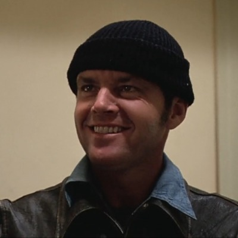
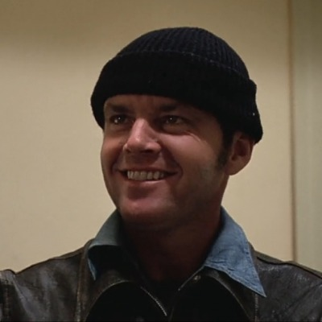

The Shawshank RedemptionAndy Dufresne
Forrest GumpForrest Gump
Green MileJohn Coffey
Seven David Mills
David Mills
David MillsOne Flew over the Cuckoo's NestRandle P.
McMurphy
| Poradie | Film | Rok | Hodnotenie |
|---|---|---|---|
| 1. |
The Shawshank RedemptionAndy Dufresne
|
1994 | 95 % |
| 2. |
Forrest GumpForrest Gump
|
1994 | 94.5 % |
| 3. |
Green MileJohn Coffey
|
1999 | 92.9 % |
| 4. |
Seven
David Mills |
1995 | 92.5 % |
| 5. |
One Flew over the Cuckoo's NestRandle P.
McMurphy
|
1975 | 92.4 % |
| 6. | Schindler's List | 1993 | 92.3 % |
| 7. | The Godfather | 1972 | 91.8 % |
| 8. | 12 Angry Men | 1957 | 91.4 % |
| 9. | Intouchables | 2011 | 91.3 % |
| 10. | Pelíšky | 1999 | 91.2 % |
| 11. | Terminator 2: Judgment Day | 1991 | 90.9 % |
| 12. | Pulp Fiction | 1994 | 90.7 % |
| 13. | The Godfather: Part II | 1974 | 90.8 % |
| 14. | The Lord of the Rings: The Fellowship of the Ring | 2001 | 90.6 % |
| 15. | The Lord of the Rings: The Return of the King | 2003 | 90.5 % |
| 16. | The Silence of the Lambs | 1991 | 90.5 % |
| 17. | Once Upon a Time in the West | 1968 | 90.5 % |
| 18. | The Dark Knight | 2008 | 90.4 % |
| 19. | Gran Torino | 2008 | 90.3 % |
| 20. | Matrix | 1999 | 90.2 % |